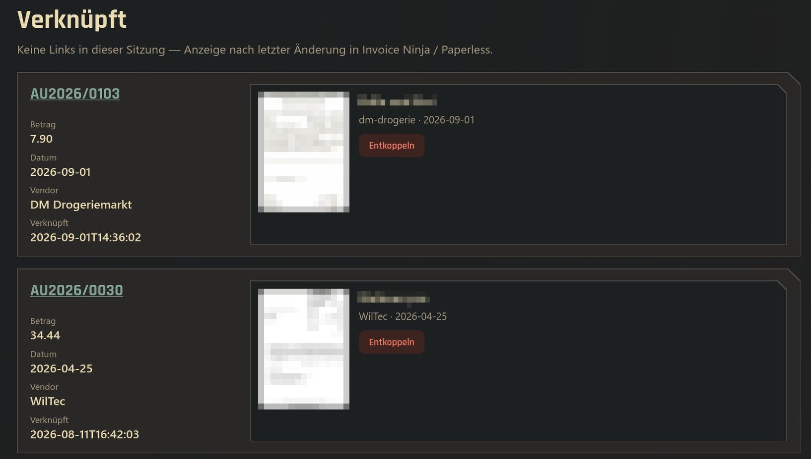

Why this exists
Wofür das gut ist
Invoice Ninja is good at invoices and expenses. Paperless-ngx is good at documents. PaperNinja connects the two, so you never have to upload a receipt twice.
Invoice Ninja ist gut bei Rechnungen und Ausgaben. Paperless-ngx ist gut bei Dokumenten. PaperNinja verbindet beide, damit du keinen Beleg zweimal hochladen musst.
- Invoice Ninja covers invoicing and expenses for your bookkeeping, but it is not a full document management system like Paperless-ngx
- Uploading every document to both systems is a lot of work, and every file then exists twice
- So instead of uploading twice: keep the documents in Paperless only, and link them to the matching expenses in Invoice Ninja
- The link is written in both directions, so you can jump from an expense to its document and back
- Invoice Ninja deckt Rechnungserstellung und Ausgaben für die Buchhaltung ab, ist aber kein vollwertiges Dokumentenmanagementsystem wie Paperless-ngx
- Jedes Dokument in beide Systeme hochzuladen ist viel Arbeit, und jede Datei liegt dann doppelt vor
- Statt doppelt hochzuladen: Die Dokumente bleiben nur in Paperless und werden mit den passenden Ausgaben in Invoice Ninja verlinkt
- Der Link wird in beide Richtungen geschrieben, du springst also von einer Ausgabe zu ihrem Dokument und zurück
Smart scoring
Intelligente Bewertung
Amount, date, vendor fuzzy match and invoice number — each signal scored and explained in the UI.
Betrag, Datum, unscharfer Lieferantenabgleich und Rechnungsnummer – jedes Signal wird bewertet und in der Oberfläche erklärt.
Human-in-the-loop
Mensch im Loop
Every link requires your confirmation. No auto-link, no silent overwrites. Ignore false positives with one click.
Jeder Link braucht deine Bestätigung. Keine automatische Verknüpfung, kein stilles Überschreiben. Fehlvorschläge ignorierst du mit einem Klick.
No matching database
Keine Abgleichsdatenbank
All state lives in Invoice Ninja & Paperless. PaperNinja reads and writes via their APIs — nothing to migrate.
Der gesamte Zustand liegt in Invoice Ninja & Paperless. PaperNinja liest und schreibt über deren APIs – nichts zu migrieren.
1:n combined receipts
1:n-Sammelbelege
One bank charge covering multiple receipts? Optional sum-search finds document sets that add up to the expense.
Eine Abbuchung für mehrere Belege? Die optionale Summensuche findet Dokumentsätze, die zusammen die Ausgabe ergeben.
Self-hosted & private
Selbst gehostet & privat
Single Docker container (Alpine, ~50 MB). API tokens stay on your server, behind your auth.
Ein einzelner Docker-Container (Alpine, ca. 50 MB). API-Tokens bleiben auf deinem Server, hinter deiner Authentifizierung.
German & English
Deutsch & Englisch
Full UI translation including score details. Keyboard shortcuts for power users.
Vollständig übersetzte Oberfläche inklusive Bewertungsdetails. Tastenkürzel für Poweruser.
Every suggestion, explained
Jeder Vorschlag erklärt
Pick an expense on To link and PaperNinja lists candidate documents with a score out of 100. A fold-out shows why: each of the four signals gets its own points and a sentence, so you can judge a match in seconds instead of trusting a number.
Wähle auf Zu verknüpfen eine Ausgabe, und PaperNinja listet passende Dokumente mit einem Score von 100. Ein Aufklapper zeigt das Warum: Jedes der vier Signale bekommt eigene Punkte und einen Satz, du beurteilst einen Treffer also in Sekunden, statt einer Zahl zu vertrauen.
- Amount, date, vendor and invoice number are scored separately and capped at 100 in total
- Only candidates above the minimum score (default 40) are shown
- A thumbnail of the document sits next to the suggestion, served through the app so your Paperless token stays on the server
- Link writes both sides, Ignore hides the pair until you restore it
- Betrag, Datum, Vendor und Rechnungsnummer werden getrennt bewertet und insgesamt bei 100 gedeckelt
- Nur Kandidaten über dem Mindest-Score (Standard 40) werden angezeigt
- Neben dem Vorschlag steht eine Vorschau des Dokuments, ausgeliefert über die App, damit dein Paperless-Token auf dem Server bleibt
- Verknüpfen schreibt beide Seiten, Ignorieren blendet das Paar aus, bis du es wiederherstellst
Linked, and easy to undo
Verknüpft und leicht rückgängig zu machen
The Linked screen lists what you linked, newest first, with the expense on the left and the document on the right. A wrong link is one click on Unlink away.
Der Bildschirm Verknüpft listet, was du verknüpft hast, neueste zuerst, links die Ausgabe und rechts das Dokument. Ein falscher Link ist mit einem Klick auf Entkoppeln wieder gelöst.
- Shows the links from your session; after a restart it reads the latest changes from Invoice Ninja and Paperless
- Unlinking a combined receipt removes only that one document and keeps the others
- Every write is recorded in
data/audit.log, which is size-limited
- Zeigt die Links deiner Sitzung; nach einem Neustart liest es die letzten Änderungen aus Invoice Ninja und Paperless
- Beim Entkoppeln eines Sammelbelegs wird nur dieser eine Beleg gelöst, die übrigen bleiben
- Jeder Schreibvorgang landet in
data/audit.log, das in der Größe begrenzt ist

How the score is built
So entsteht der Score
The four signals add up and are capped at 100. Linking is always manual, the score only orders the suggestions.
Die vier Signale addieren sich und sind bei 100 gedeckelt. Verknüpft wird immer manuell, der Score sortiert nur die Vorschläge.
| SignalSignal | MaxMax | How it is judgedWie es bewertet wird |
|---|---|---|
| AmountBetrag | 40 | Paperless amount field, or the amount found in OCR text and title, compared with the expense amountBetragsfeld in Paperless oder der im OCR-Text und Titel gefundene Betrag, verglichen mit dem Betrag der Ausgabe |
| DateDatum | 25 | Expense date against the document date; the closer, the higher, within a window of ±7 days by defaultDatum der Ausgabe gegen das Belegdatum; je näher, desto höher, standardmäßig im Fenster von ±7 Tagen |
| VendorVendor | 20 | Fuzzy match of the Invoice Ninja vendor against the Paperless correspondent or title, including learned aliasesUnscharfer Abgleich des Invoice-Ninja-Vendors mit dem Paperless-Korrespondenten oder Titel, inklusive gelernter Aliase |
| Invoice numberRechnungsnr. | 30 | Expense number or invoice number found in the custom field, title or OCR textIn Feld, Titel oder OCR-Text gefundene Ausgaben- oder Rechnungsnummer |
- Vendor aliases are learned from every link you confirm, and backfilled once from expenses that are already linked, so “Amazon” and “Amazon EU S.à r.l.” count as the same
- Year filter: the current calendar year by default, so old backlog does not slow the lists
- Combined receipts (1∶n): an optional toggle looks for two to four documents whose amounts add up to the expense
- Vendor-Aliase werden aus jedem bestätigten Link gelernt und einmalig aus bereits verknüpften Ausgaben nachgelernt, sodass „Amazon“ und „Amazon EU S.à r.l.“ als dasselbe zählen
- Jahresfilter: standardmäßig das aktuelle Kalenderjahr, damit alter Rückstau die Listen nicht ausbremst
- Sammelbelege (1∶n): Ein optionaler Schalter sucht zwei bis vier Dokumente, deren Beträge sich zur Ausgabe summieren
Screens
Bildschirme
| ScreenBildschirm | RouteRoute | PurposeZweck |
|---|---|---|
| To linkZu verknüpfen | /match | Unlinked expenses with suggested documentsUnverknüpfte Ausgaben mit vorgeschlagenen Dokumenten |
| Documents firstBelege zuerst | /queue | The reverse direction: unlinked documents with a chosen tag, matched to expensesDie Gegenrichtung: unverknüpfte Dokumente mit einem gewählten Tag, zugeordnet zu Ausgaben |
| LinkedVerknüpft | /linked | Your links, with the option to unlinkDeine Links, mit der Möglichkeit zu entkoppeln |
| IgnoredIgnoriert | /ignored | Hidden expenses and documents, restorableAusgeblendete Ausgaben und Dokumente, wiederherstellbar |
| Search documentDokument suchen | per expensepro Ausgabe | Manual Paperless search with presets: date ±14 days, amount ±5 %, vendor, invoice number, year, unlinked onlyManuelle Paperless-Suche mit Presets: Datum ±14 Tage, Betrag ±5 %, Vendor, Rechnungsnr., Jahr, nur unverknüpft |
| Setup / FieldsSetup / Felder | /setup | Shows the live custom fields of both systems and the ENV lines to setZeigt die Live-Custom-Fields beider Systeme und die zu setzenden ENV-Zeilen |
| PasswordPasswort | /password | Change the login passwordLogin-Passwort ändern |
Keyboard: j / k move between suggestions, n jumps to the next expense, Enter links the focused suggestion, s opens the search, / focuses the search field, ? shows the help and Esc closes it.
Tastatur: j / k wechseln zwischen Vorschlägen, n springt zur nächsten Ausgabe, Enter verknüpft den fokussierten Vorschlag, s öffnet die Suche, / fokussiert das Suchfeld, ? zeigt die Hilfe und Esc schließt sie.
Architecture
Architektur
One process, no SPA build, no matching database. Reads and writes go straight to the source APIs.
Ein Prozess, kein SPA-Build, keine Abgleichsdatenbank. Lesen und Schreiben gehen direkt an die Quell-APIs.
- Unlinked simply means the Paperless URL on the expense is empty, or the expense number on the document is empty
- A link writes the Paperless URL and invoice number to the expense, and the expense number, Invoice Ninja URL and invoice number to the document. If Paperless fails, the Invoice Ninja write is rolled back on a best-effort basis
- Field mapping lives in
.env, not in the app; the Setup screen only helps you copy the lines - Lists are cached in the process (180 s by default) so the APIs are not hit on every click
- HTMX is served locally, without a CDN, and the content security policy allows only own scripts
- Unverknüpft heißt schlicht: Die Paperless-URL an der Ausgabe ist leer oder die Ausgabennummer am Dokument ist leer
- Ein Link schreibt Paperless-URL und Rechnungsnummer an die Ausgabe sowie Ausgabennummer, Invoice-Ninja-URL und Rechnungsnummer ans Dokument. Scheitert Paperless, wird der Schreibvorgang in Invoice Ninja nach Möglichkeit zurückgenommen
- Das Feld-Mapping steht in der
.env, nicht in der App; der Setup-Bildschirm hilft nur beim Kopieren der Zeilen - Listen werden im Prozess gecacht (standardmäßig 180 s), damit die APIs nicht bei jedem Klick belastet werden
- HTMX wird lokal ausgeliefert, ohne CDN, und die Content-Security-Policy erlaubt nur eigene Skripte
Up and running in 3 minutes
In 3 Minuten startklar
Docker Compose, two API tokens, done.
Docker Compose, zwei API-Tokens, fertig.
- Pull & configure — grab
docker-compose.ymland.env.example, set your Invoice Ninja and Paperless URLs & tokens. - Start the container — run
docker compose up -d. Openlocalhost:8080and set your app password. - Map custom fields — the Setup / Fields screen auto-discovers both APIs. Copy the suggested ENV lines and restart.
- Start linking — review suggestions on To link, confirm matches, and see cross-links appear in both systems instantly.
- Holen & konfigurieren –
docker-compose.ymlund.env.exampleladen, URLs und Tokens von Invoice Ninja und Paperless eintragen. - Container starten –
docker compose up -dausführen,localhost:8080öffnen und das App-Passwort setzen. - Custom Fields zuordnen – der Bildschirm Setup / Fields erkennt beide APIs automatisch. Vorgeschlagene ENV-Zeilen kopieren und neu starten.
- Verknüpfen – Vorschläge unter To link prüfen, Treffer bestätigen und die Querverweise erscheinen sofort in beiden Systemen.
Configuration
Konfiguration
Everything is set through environment variables in .env. These are the ones you will touch first.
Alles wird über Umgebungsvariablen in der .env gesetzt. Diese fasst du zuerst an.
| VariableVariable | PurposeZweck |
|---|---|
INVOICE_NINJA_URL INVOICE_NINJA_TOKEN | Invoice Ninja APIInvoice-Ninja-API |
PAPERLESS_URL PAPERLESS_TOKEN | Paperless APIPaperless-API |
IN_EXPENSE_FIELD_INVOICE_NUMBER IN_EXPENSE_FIELD_PAPERLESS_URL | Which of custom_value1 to 4 on the expense holds which valueWelches von custom_value1 bis 4 an der Ausgabe welchen Wert hält |
PL_FIELD_INVOICE_NUMBER PL_FIELD_EXPENSE_NUMBER PL_FIELD_INVOICE_NINJA_URL | Paperless custom field IDsIDs der Paperless-Custom-Fields |
PL_FIELD_AMOUNT | Optional monetary field used for amount matchingOptionales Geldfeld für den Betragsabgleich |
PL_REVERSE_QUEUE_TAG | Paperless tag name or ID for the Documents first queueName oder ID des Paperless-Tags für die Warteschlange Belege zuerst |
MATCH_DATE_WINDOW_DAYS MATCH_AMOUNT_TOLERANCE MATCH_MIN_SCORE | Matching window, default 7 days, tolerance 0.02 and minimum score 40Abgleichsfenster, Standard 7 Tage, Toleranz 0,02 und Mindest-Score 40 |
SESSION_HTTPS | Set to true behind a reverse proxy with HTTPSAuf true setzen hinter einem Reverse-Proxy mit HTTPS |
API_CACHE_TTL_SECONDS | Cache time for API lists, default 180, 0 turns it offCache-Zeit für API-Listen, Standard 180, 0 schaltet ihn ab |
Data lives in ./data, mounted at /app/data: auth.json, vendor_aliases.json, ignore.json and audit.log. Keep this volume. Behind a reverse proxy, point it at http://127.0.0.1:8080 and set SESSION_HTTPS=true. Update with docker compose pull && docker compose up -d.
Die Daten liegen in ./data, eingebunden unter /app/data: auth.json, vendor_aliases.json, ignore.json und audit.log. Behalte dieses Volume. Hinter einem Reverse-Proxy zeigst du ihn auf http://127.0.0.1:8080 und setzt SESSION_HTTPS=true. Aktualisieren mit docker compose pull && docker compose up -d.
Access and safety
Zugang und Sicherheit
- One password, no user name. You set it on the first start; it is stored only as an Argon2id hash in
data/auth.json - Lockout: about 0.4 s of delay per failed attempt and a 60 s lock after five wrong passwords per client
- Changing the password signs out all other browsers; to reset it, delete
auth.jsonand restart - API tokens stay on the server; the browser only sees preview images through the app, under your session
- Security headers on every response, and
/healthstays open for the Docker healthcheck
- Ein Passwort, kein Benutzername. Du setzt es beim ersten Start; gespeichert wird nur ein Argon2id-Hash in
data/auth.json - Sperre: etwa 0,4 s Verzögerung pro Fehlversuch und 60 s Sperre nach fünf falschen Passwörtern pro Client
- Ein Passwortwechsel meldet alle anderen Browser ab; zum Zurücksetzen
auth.jsonlöschen und neu starten - API-Tokens bleiben auf dem Server; der Browser sieht Vorschaubilder nur über die App, unter deiner Sitzung
- Sicherheits-Header bei jeder Antwort, und
/healthbleibt für den Docker-Healthcheck offen
Questions
Fragen
Does PaperNinja link anything on its own?Verknüpft PaperNinja etwas von allein?
No. It only suggests. Nothing is written until you confirm a suggestion, and every write goes to the audit log.
Nein. Es schlägt nur vor. Geschrieben wird erst, wenn du einen Vorschlag bestätigst, und jeder Schreibvorgang landet im Audit-Log.
Do I need to change my Invoice Ninja or Paperless setup?Muss ich mein Invoice Ninja oder Paperless umbauen?
No plugin and no schema change. You use custom fields that already exist. You only tell PaperNinja which ones in .env; the Setup screen lists them for you.
Kein Plugin und keine Schema-Änderung. Du nutzt Custom Fields, die schon existieren. Du sagst PaperNinja nur in der .env, welche; der Setup-Bildschirm listet sie für dich auf.
Where is the data stored?Wo werden die Daten gespeichert?
The matching state lives in Invoice Ninja and Paperless. PaperNinja itself keeps only four small files in data/: the password hash, learned vendor aliases, the ignore list and the audit log.
Der Abgleichsstand liegt in Invoice Ninja und Paperless. PaperNinja selbst hält nur vier kleine Dateien in data/: den Passwort-Hash, gelernte Vendor-Aliase, die Ignorierliste und das Audit-Log.
What if the suggestions are poor?Was, wenn die Vorschläge schlecht sind?
Open the fold-out to see which signal missed. Lower MATCH_MIN_SCORE to see more candidates, widen the date window, or set PL_FIELD_AMOUNT so the amount comes from a field instead of OCR text. Confirmed links teach vendor aliases, so later matches improve.
Öffne den Aufklapper und sieh, welches Signal nicht getroffen hat. Senke MATCH_MIN_SCORE, um mehr Kandidaten zu sehen, vergrößere das Datumsfenster oder setze PL_FIELD_AMOUNT, damit der Betrag aus einem Feld statt aus OCR-Text kommt. Bestätigte Links lehren Vendor-Aliase, spätere Treffer werden also besser.
Which languages and platforms are supported?Welche Sprachen und Plattformen werden unterstützt?
The interface is available in German and English (German by default) and switches from the top bar. The image is Alpine-based and published for amd64 and arm64 on GHCR.
Die Oberfläche gibt es auf Deutsch und Englisch (standardmäßig Deutsch), umschaltbar in der oberen Leiste. Das Image basiert auf Alpine und ist für amd64 und arm64 auf GHCR veröffentlicht.